Dimension
L'Astrelume
Un monde continu et sombre, sous une nuit qui ne finit jamais. Neuf biomes, sa propre pierre, sa propre flore, cinq monstres, et le seul minerai qui donne des fragments.
Y entrer
Dix Cadres d'Astrelume montés en portail, allumés avec un fragment à la main. Vous arrivez au-dessus des mêmes coordonnées, sur le sol le plus proche ; un portail de retour se construit devant vous.
Un monde en paliers
L'Astrelume ne roule pas comme l'Overworld, il marche. Le sol se cale sur quatre altitudes nettes — environ Y 68, 84, 100 et 120 — séparées par des murs francs plutôt que par des pentes. On ne monte pas, on escalade.
Un second bruit perce ces plateaux de cuvettes à bords abrupts, qui descendent à Y 45 et se remplissent de l'eau noire : environ un sixième de la dimension. Il n'y a ni océan, ni rivière, ni la moindre vallée creusée par un fleuve.
Les biomes suivent les marches. Le palier sur lequel vous vous trouvez décide de ce qui peut pousser, et deux champs plus rapides en mélangent deux ou trois à l'intérieur de chaque palier : vous changez de biome tous les cent à cent-cinquante blocs, jamais par bandes climatiques. Franchir un mur change presque toujours le paysage.
La nuit permanente
L'Astrelume n'a aucune lumière du ciel, exactement comme le Nether : ce n'est pas une teinte sombre posée sur un monde éclairé, c'est l'absence pure et simple de la couche de lumière céleste. À ciel ouvert comme au fond d'une grotte, la valeur vaut 0. Il n'y a donc ni jour, ni nuit, ni météo hors des Cimes de Givre, et les seuls points lumineux du monde sont ceux que la flore, le minerai et vos torches y mettent.
Le ciel garde ses aurores : c'est un réglage séparé de l'éclairage. Une trace d'ambiance (0,08) évite le noir absolu dans les recoins. La nuit est inscrite dans les données de lumière plutôt que dans un filtre d'affichage ; mais un pack de shaders dessine son propre ciel et son propre soleil, d'où la section suivante.
Les monstres y apparaissent donc partout et en permanence. Le seuil est la lumière de bloc : au-dessus de 7, plus rien n'apparaît. C'est la ligne entre la flore et les lampes — un champignon luisant (6), une pointe d'éclat (5) ou un voile (4) n'empêchent rien, tandis qu'une torche (14), une éclosion luisante (15) ou une lampe de glacier (12) dégagent vraiment un campement.
Et parce que la dimension n'a aucune lumière du ciel, le quota de monstres de Minecraft se répartirait sur toute la colonne, de la bedrock à Y 200 : beaucoup de monstres vivants, très peu à portée de vue. Une passe supplémentaire, toutes les trois secondes, en maintient donc jusqu'à 20 dans un rayon de 48 blocs autour de vous, et s'arrête dès que le compte y est. Elle obéit aux mêmes règles que le reste — lumière, biome, taille de groupe, Phare de Garde comprise.
Vous ne pouvez pas y dormir, ni y poser de point de réapparition.
L'Astrelume avec des shaders
Un pack de shaders (Complementary, BSL…) dessine les mondes qu'il connaît - l'Overworld, le Nether, l'End - chacun avec ses programmes, et tout autre monde comme l'Overworld : un soleil, un ciel bleu, le plein jour. C'est pour cela que l'Astrelume y paraît clair et plat. Iris laisse un pack dire quel programme dessine quel monde ; Ebisu sait l'y écrire :
| Commande | Ce qu'elle fait |
|---|---|
| /ebisushaders | Règle le pack choisi dans Iris pour que l'Astrelume soit dessiné avec les programmes de l'End : ciel violet sombre, étoiles, brume, plus de soleil (ceux du Nether si le pack n'a pas d'End). Un pack en .zip n'est jamais modifié : une copie …_Ebisu.zip est écrite à côté et choisie à sa place. Les shaders se rechargent seuls ; sinon, menu Shaders → Appliquer. |
| /ebisushaders restore | Revient au pack d'origine. |
La première fois que vous arrivez dans l'Astrelume avec un pack qui ne le connaît pas, une ligne dans le chat le signale et propose le réglage d'un clic. C'est une commande du client : elle ne touche qu'à vos fichiers, et seulement quand vous la lancez.
Pas encore essayé avec Iris et Complementary installés. La modification des fichiers a été testée sur de faux packs (12 vérifications sur 12) ; reste à confirmer que le rendu est bon dans le jeu. Si le rechargement automatique ne marche pas avec votre version d'Iris, il suffit de recharger à la main (menu Shaders, Appliquer).
Le réglage à la main, si vous préférez : dans le pack, ouvrez shaders/dimension.properties et ajoutez ebisu:ether à la ligne dimension.world1.
Les neuf biomes
| Biome | Ce que vous y trouvez |
|---|---|
| Prairies d'Aurore | Vallons ouverts, herbe menthe, lucioles. Le biome le plus praticable. |
| Canopée de Lumine | Forêt bioluminescente : arbres géants, bulbes dans les branches, lianes lumineuses. |
| Jardins d'Améthyste | Champ de cristal, calcite et sable violet, géodes. |
| Val du Crépuscule | Val rose, arbres du Crépuscule, braises au sol. |
| Dunes de Poussière d'Étoiles | Croûte pâle hérissée de colonnes blanchies et de pointes d'éclat ; la seule lumière sort du sol, en fulgurite. |
| Cimes de Givre | Hauteurs gelées, forêts d'aiguilles de glace, lampes de glacier, neige qui tombe vraiment. |
| Bas-fonds Scintillants | Les cuvettes noyées : éperons couverts de voile des marées et lits d'amas de perles. Rien de vanilla n'y pousse. |
| Grotte Luminescente | Biome souterrain. Mousse, lanternes, lianes : c'est là que la dimension est la plus belle. |
| Cavernes de Cristal | L'autre souterrain : calcite, cristaux, violet profond. |
Les créatures
Quatre créatures portent des fragments, partout et à toute heure. Toutes les quatre ont été redessinées de zéro en 0.6.0 : un corps à elles, une peau dont une part luit dans le noir, et chacune sa manière de chasser. La quatrième, la Grande Ourse, est nouvelle.
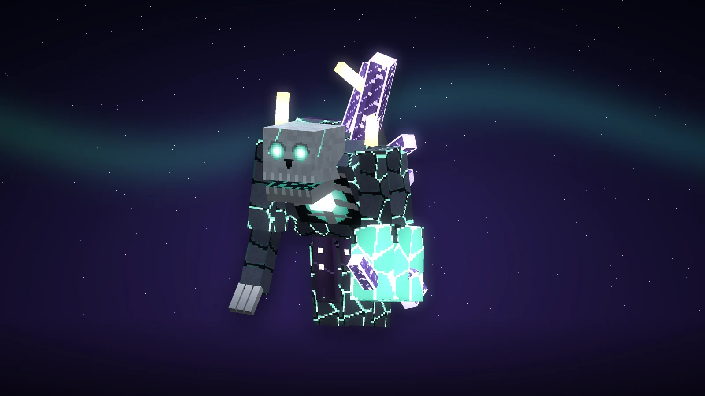
(agrandir l'image)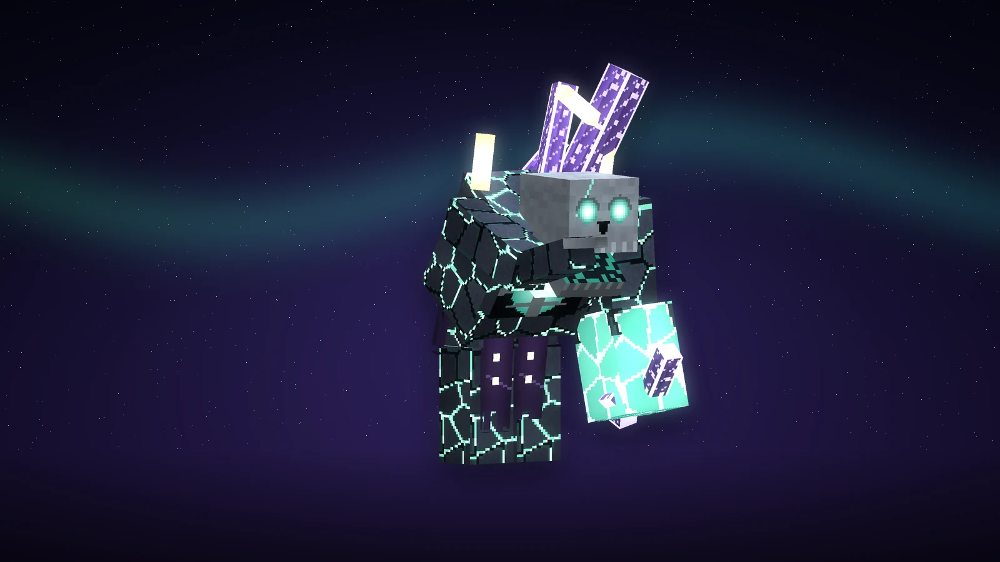
(agrandir l'image)Revenant d'Astrelume
- PV
- 48
- Dégâts
- 9 (3 par la chaîne, 6 par l'éclat)
Un mort que le ciel a gardé : la chair devenue pierre bleue, fendue en plaques, et dans les joints la lumière froide qui le fait marcher ; la cage thoracique ouverte sur un cœur qui est une étoile, le crâne penché en avant sous un halo brisé, le poing gauche pris dans un gourdin de cristal. Lent et lourd, il frappe trois fois plus fort qu'un zombie. De 4 à 14 blocs, il lance la chaîne de son cœur : une seconde d'avertissement - la lumière sort de sa poitrine et file vers vous -, puis vous êtes arraché du sol et tiré vers lui, blessé et ralenti. Sous la moitié de sa vie, le cristal en lui éclate : tout ce qui est à 3,5 blocs est blessé et repoussé, et le revenant, délesté, marche plus vite.
Butin 75 % → 2 à 4 fragments ; os, éclats d'améthyste
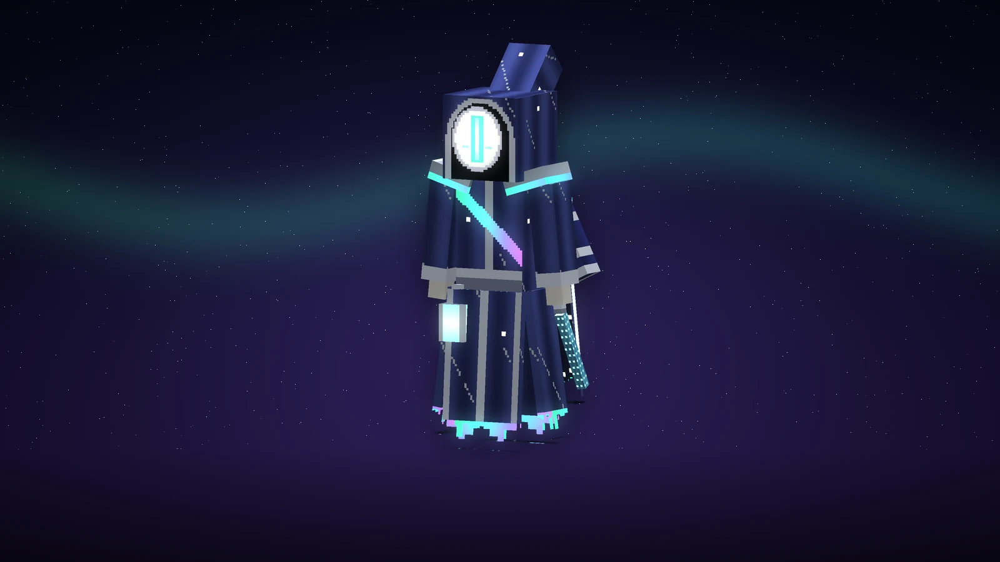
(agrandir l'image)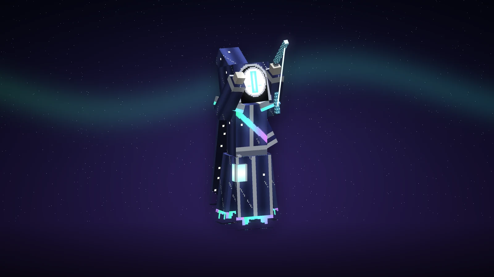
(agrandir l'image)Archer des Cimes
- PV
- 32
- Dégâts
- 7 à 9 (flèche), 6 par étoile
Une sentinelle des anciens sanctuaires, toujours de garde : une grande robe du bleu de l'heure qui suit le crépuscule, brodée d'argent des figures du ciel ; aucun visage sous la capuche, seulement un masque de porcelaine et sa fente de lumière ; un arc de cristal bleu glace tendu d'un fil de lumière. Elle ne marche pas : elle glisse, à une main du sol. Elle garde ses distances et tire, plus fort et plus souvent qu'un squelette. Toutes les deux ou trois flèches, elle lève les bras et appelle une pluie d'étoiles : des marques de lumière au sol autour de vous, une seconde d'avertissement, puis cinq flèches tombent du ciel. Approchez à moins de 4 blocs et elle est ailleurs, une dizaine de blocs plus loin, l'arc déjà tendu. Ses flèches traversent les autres monstres.
Butin 75 % → 2 à 4 fragments ; flèches, ficelle
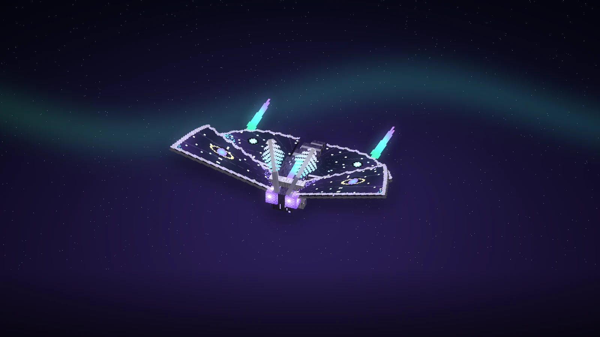
(agrandir l'image)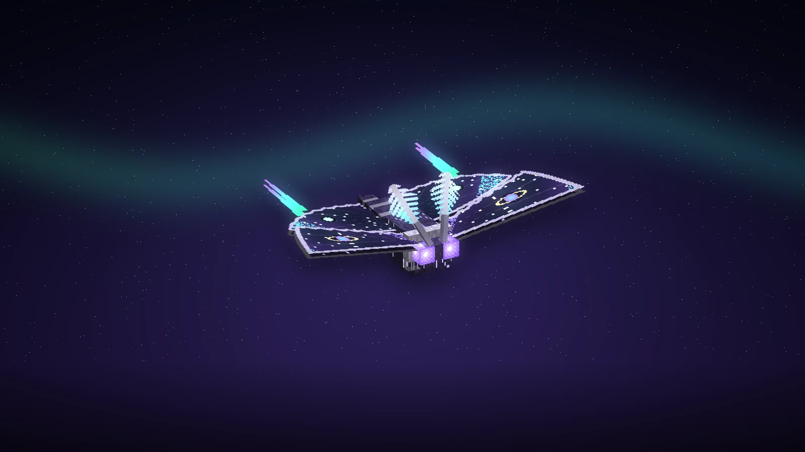
(agrandir l'image)Phalène du Vide l'ancien Rôdeur du Vide
- PV
- 36
- Dégâts
- 8
Ce que les premiers visiteurs appelaient le Rôdeur, avant de l'avoir vu de près : une phalène de trois blocs d'envergure, le corps fourré, une collerette blanche, deux grands yeux à facettes, des antennes en plumes ; des ailes qui sont des morceaux de nuit avec leurs étoiles - sur chaque aile antérieure, un monde à anneaux en guise d'œil -, les ailes postérieures étirées en queues d'aurore. Comme toute phalène, elle va à la lumière : qui tient une torche, une lanterne ou n'importe quoi qui éclaire, ou se tient en pleine lumière, elle le voit de 40 blocs ; les autres, de 18. Elle tourne autour de sa proie et pique ; de près, elle bat des ailes au-dessus de vous et secoue sa poudre : Obscurité 5 s, Cécité 2 s, Lenteur 4 s.
Butin 75 % → 2 à 4 fragments ; membrane, poudre lumineuse
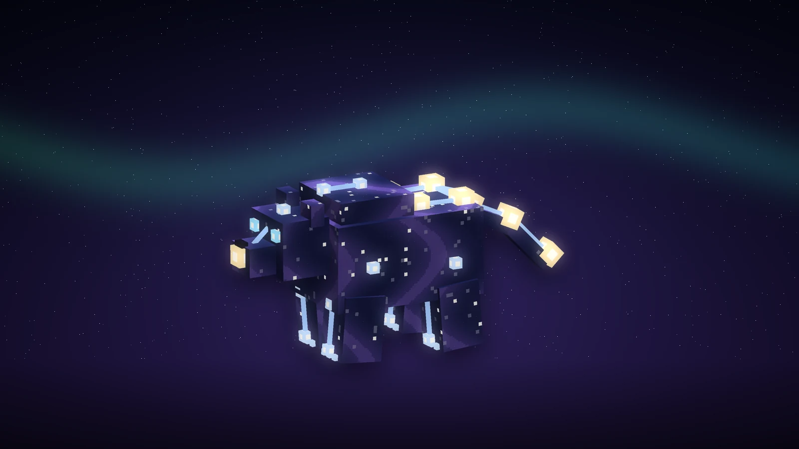
(agrandir l'image)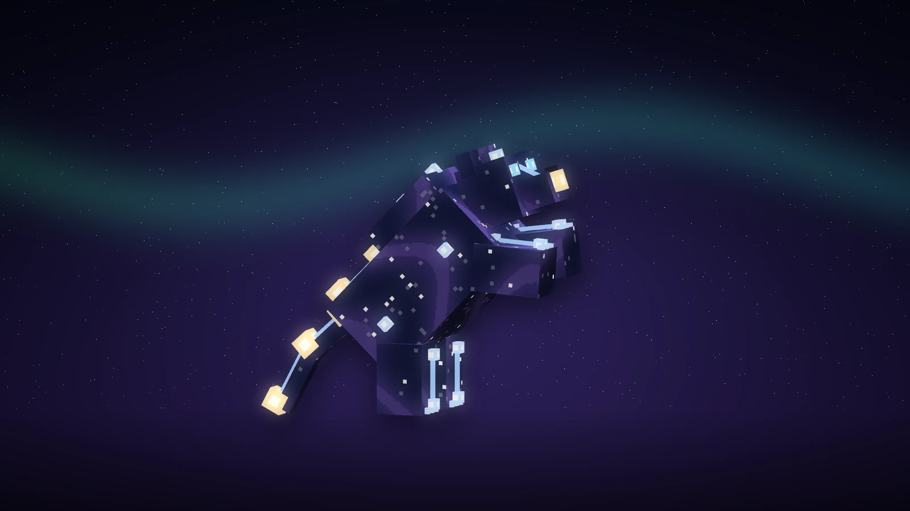
(agrandir l'image)Grande Ourse nouvelle
- PV
- 70
- Dégâts
- 10 (4 au rugissement)
La constellation, descendue marcher. Pas de corps : un nuage de nuit en forme d'ours, à demi transparent ; et dessus, reliées par des traits de lumière comme sur les vieilles cartes du ciel, les sept étoiles du Chariot - la casserole sur la croupe, le manche en guise de longue queue - et les étoiles plus petites du front, du museau, des genoux et des pattes. Frappée, elle peut s'éparpiller (une fois sur trois, pas plus d'une fois toutes les 5 s) : elle se défait en étoiles et se reforme derrière vous ; tant qu'elle est éparpillée, rien ne la touche. De temps en temps, elle se dresse sur ses pattes arrière et rugit : tout ce qui est à 6 blocs est blessé, projeté et Affaibli 5 s. Plus rare que les trois autres - environ une apparition sur vingt -, et toujours seule.
Butin 75 % → 2 à 4 fragments ; poudre lumineuse, éclats d'améthyste


Elles chassent ensemble : la chaîne et l'éclat du Revenant, le rugissement de l'Ourse et la poudre de la Phalène n'atteignent que vous, jamais les autres monstres, et les flèches de l'Archer les traversent.
Les deux exceptions
| Monstre | PV | Dégâts | Armure | Butin de relique | Comportement |
|---|---|---|---|---|---|
| Gardien de l'Éclipse l'ancien Gardien de Cendres | 160 | 12 → 16 | 14 | 6 à 12 fragments + 1 sceau | Un boss en trois actes, avec sa barre. Toujours seul, toujours loin du précédent. Voir plus bas. |
| Tyran de la Tour | 600 | 22 → 30 | 18 | — | Uniquement au 100e étage de la Tour (ou par son œuf). Trois actes, sept attaques ; voir sa section. |
Trois kills sur quatre donnent 2 à 4 fragments, et le Butin pousse la fourchette à 3 à 5 sans jamais la dépasser : un niveau de plus vous rapproche du haut de la fourchette, il ne l'ouvre pas.
Le Gardien de l'Éclipse
Le seigneur de l'Astrelume, et ce qui garde ses tertres. Un grand astronome en armure qui marche sur rien : pour jambes, une robe de cendre dont l'ourlet couve encore ; une cuirasse d'acier étoilé gravée d'un astrolabe d'or et fendue sur un cœur de braise ; pour tête, un soleil noir - une éclipse - couronné d'une couronne de rayons qui tourne ; des croissants de lune pour épaulières ; une glaive dont la lame est un croissant de clair de lune ; une lune dans sa main ouverte, trois autres qui tournent sans cesse autour de lui, et autour d'elles l'anneau incliné d'une sphère armillaire.

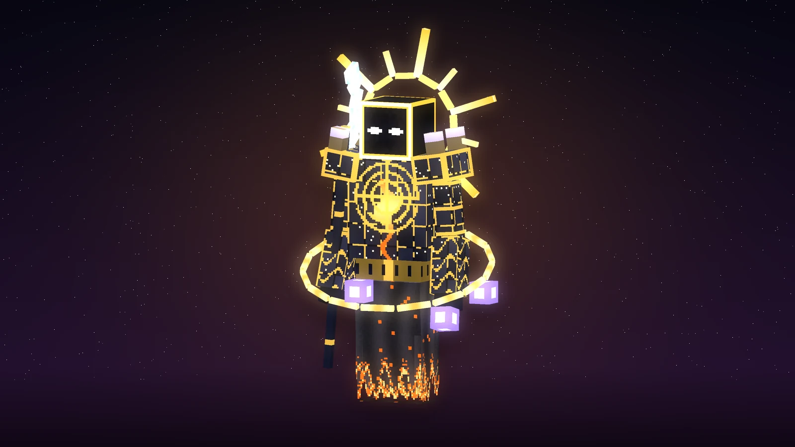
(agrandir l'image)
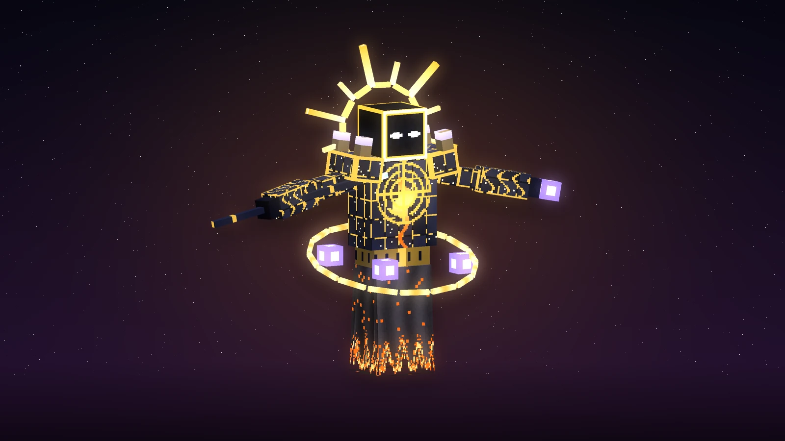
(agrandir l'image)
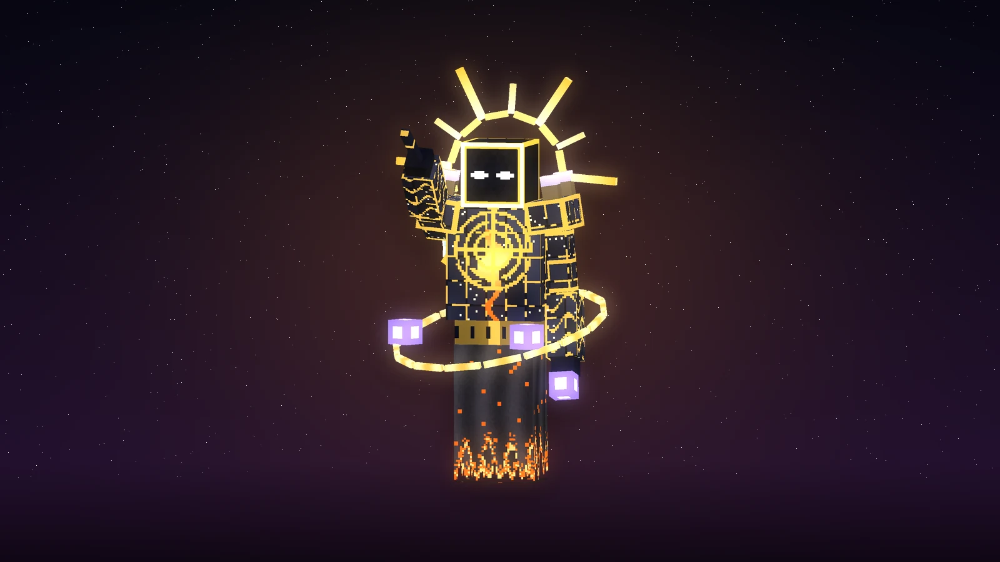
(agrandir l'image)Rare, toujours seul, jamais à moins de 96 blocs d'un autre, il se voit de loin : la cendre tombe de lui, ses braises montent, sa couronne étincelle. Le combat se joue en trois actes, et sa barre de boss passe de l'or au violet puis au rouge :
| Attaque | Quand | Ce qui arrive |
|---|---|---|
| Le fauchage | de près, dès le premier acte | La glaive recule par-dessus l'épaule, le clair de lune s'y amasse - puis elle passe en arc devant lui : 12 dégâts (16 au dernier acte) et un recul. |
| La pluie de cendres | dès le premier acte | Des cercles de braises s'allument au sol sous chacun et autour de lui ; deux secondes pour en sortir, puis la cendre tombe en feu : 7 dégâts (10), et l'on brûle. |
| Les lunes | de loin | Trois petits mondes de lumière violette (cinq ensuite) partent vers vous et vous suivent ; leur touche blesse (5) et vous soulève un instant, comme la lune soulève la mer. Un coup les brise. |
| La couronne | à partir du deuxième acte | Bras grands ouverts, sa couronne double de taille et des anneaux de lumière courent sur le sol depuis lui - un, puis trois de suite au dernier acte. On ne les évite qu'en sautant : 8 dégâts (10), projeté. |
| L'éclipse | aux deux tiers et au quart de sa vie | Il s'élève, intouchable, la lumière s'éteint autour de lui (Obscurité 8 s pour tous à 40 blocs), et des revenants sortent de la cendre pour se battre à ses côtés : deux, puis trois. |
| Le pas de l'ombre | au dernier acte | Il disparaît et réapparaît derrière vous, la glaive déjà levée. |
Le feu, les chutes et la noyade ne lui font rien, le poison et le Wither non plus, et ses propres revenants ne peuvent pas le blesser. Comme toutes les attaques de zone de l'Astrelume, les siennes ne touchent jamais les autres monstres. Il laisse 6 à 12 fragments et un Sceau d'invocation, des éclats d'améthyste, de la poudre lumineuse, et une fois sur cinq une étoile du Nether. On le trouve en errance (environ une apparition de monstre sur deux cents, jamais deux près l'un de l'autre), au fond des tertres de cendres, dont il scelle le coffre tant qu'il vit, et aux deux derniers étages des citadelles.
Ce qui se trouve en surface
La dimension est sombre et le brouillard est court : sans repères elle serait illisible. Tout ce qui suit sert autant à s'orienter qu'à fouiller.
| Structure | Fréquence | Ce que c'est |
|---|---|---|
| Tour de l'Enfer | ~1 / 3000 chunks | Quatre pylones noirs autour d'un seuil, et rien d'autre : les cent étages n'existent pas tant que personne n'a touché la pierre. Ils apparaissent alors un par un, dans une arène instanciée par groupe. Un sceau par étage plus des fragments, un booster tous les dix, et un palier tous les dix étages où l'on choisit : repartir avec tout, ou descendre plus bas. Au centième, le Tyran de la Tour. Voir la section qui lui est consacrée. |
| Citadelle de Cendres | ~1 / 600 chunks | 25×25×25, cinq étages, et chacun est un labyrinthe tiré au sort : l'escalier vers le niveau suivant est caché dans une case que le labyrinthe choisit, donc on ne la traverse pas, on la fouille. Quatre à six monstres par étage et un Gardien de l'Éclipse sur chacun des deux derniers. Les coffres sont dans les culs-de-sac. Toute la citadelle contient 20 à 25 sceaux au total, pas un de plus, et 2 ou 3 coffres seulement portent un booster ; le reste n'est que fragments et sceaux. Elle exige un terrain vraiment plat. |
| Maison d'Astrelume | ~1 / 200 chunks | Une pièce murée avec une porte, des fenêtres encore allumées et une lanterne sur un petit clocheton — c'est ce point lumineux qui la trahit de loin. Le coffre paie un prix fixe : un sceau et 3 à 10 fragments, à chaque fois, plus du butin ordinaire. Aucun booster. Deux monstres y sont enfermés et ne disparaîtront pas : le butin se mérite. |
| Monolithe d'Astrelume | ~1 / 24 chunks | Une dalle de pierre du Vide de 14 à 24 blocs, suspendue en l'air au-dessus d'un socle, une veine de lumière sur toute sa hauteur. Le brouillard se ferme à 96 blocs : c'est cette ligne lumineuse que vous voyez en premier dans le noir, et c'est vers elle qu'on marche. |
| Cratère de Cristal | ~1 / 20 chunks | Une cuvette de 5 à 9 blocs de rayon creusée dans le sol, doublée de calcite, avec une lanterne et de vrais amas de cristal au fond — qui continuent de pousser. |
| Colonnade Brisée | ~1 / 2 chunks (prairies), ~1 / 10 chunks ailleurs | Une file de colonnes cassées à des hauteurs différentes, certaines couchées. C'est ce qui empêche le terrain ouvert de ressembler à un champ vide. |
| Tombeau de Cendres | ~1 / 300 chunks | Une chambre enterrée dont seul le toit dépasse, avec un escalier effondré pour y descendre. Deux Gardiens de l'Éclipse y sont enfermés, et le coffre du fond est scellé : il n'y a pas de clé, le verrou est le combat. Quand le dernier tombe, le sceau cède et le coffre donne 3 sceaux d'invocation et 7 à 18 fragments. Aucun booster. Le bloc scellé est incassable : creuser autour ne sert à rien. |
| Ruine céleste | ~1 / 60 chunks | Un sanctuaire à ciel ouvert : dallage, colonnes brisées, lanternes, et un coffre posé sur un cadre d'Astrelume. |
| Flèches et obélisques | fréquent | Aiguilles de cristal, de givre ou de grès selon le biome. Pas de butin, mais un repère. |
Apparition des monstres
Les monstres apparaissent partout, tout le temps, tant que la lumière de bloc reste à 7 ou moins. Aucun monstre de l'Overworld n'apparaît ici : pas de zombie, pas de squelette, pas de noyé. Les cinq ci-dessous sont les seuls.
| Monstre | Poids | Par groupe | Part des apparitions | Butin de relique |
|---|---|---|---|---|
| Revenant d'Astrelume | 70 | 3 à 6 | 46 % | 75 % → 2 à 4 (3 à 5 au Butin) |
| Archer des Cimes | 60 | 2 à 4 | 40 % | 75 % → 2 à 4 (3 à 5 au Butin) |
| Phalène du Vide | 10 | 1 à 2 | 7 % | 75 % → 2 à 4 (3 à 5 au Butin) |
| Grande Ourse | 8 | 1 | 5 % | 75 % → 2 à 4 (3 à 5 au Butin) |
| Gardien de l'Éclipse | 3 | 1 | 2.0 % → 0.5 % | 6 à 12 fragments + 1 sceau |
Le poids décide lequel apparaît, pas combien : c'est la taille des groupes qui peuple la dimension. La Phalène du Vide apparaît un peu plus souvent que son poids ne le dit : elle vole, donc elle est valide dans tout bloc d'air, là où les autres exigent un sol sous leurs pieds. Son poids est baissé en conséquence. La Grande Ourse vient toujours seule. Le Gardien passe par un second filtre qui refuse trois apparitions sur quatre, ce qui le ramène à environ 0,5 %, et aucun ne vient à moins de 96 blocs d'un autre. Ces poids sont ceux de base ; certains biomes les ajustent.
Le minerai d'Astrelume
Des filons de 2 à 4 blocs, entre Y -56 et Y 60. Il n'y a pas de couche unique à viser : la chance monte continuellement avec la profondeur, et elle monte vite. Creuser en surface ne donne presque rien, descendre au fond paie.
Comme pour le diamant, un bloc de filon qui donnerait sur une cavité est écarté une fois sur deux : les filons se cachent surtout dans la roche pleine.
| Profondeur | Filons / chunk | En clair |
|---|---|---|
| Y -56 à -41 | 2.00 | 2.0 filons par chunk |
| Y -40 à -25 | 1.24 | 1.2 filons par chunk |
| Y -24 à -9 | 0.71 | 1 filon tous les 1 chunks |
| Y -8 à 7 | 0.34 | 1 filon tous les 3 chunks |
| Y 8 à 23 | 0.12 | 1 filon tous les 8 chunks |
| Y 24 à 39 | 0.04 | 1 filon tous les 27 chunks |
| Y 40 à 60 | 0.01 | 1 filon tous les 124 chunks |
Chaque bloc de filon donne 1 à 2 fragments, et 1 à 3 avec la Fortune, quel que soit son niveau. Un filon de quatre blocs bien enchanté vaut donc près d'un sceau.
Soit environ 4.5 filons par chunk sur toute la colonne. Les chiffres par chunk supposent une roche percée de grottes ; le taux par bloc de roche, lui, est exact.
La Tour de l'Enfer
Un chunk sur 3000, et la seule chose de la dimension qui ne se fouille pas : elle se gravit.
Au sol il n'y a qu'un seuil entre quatre pylones. Les cent étages n'existent pas tant que personne n'y a touché : une tour réellement haute de six cents blocs ne tiendrait pas dans un monde qui en fait trois cent quatre-vingt-quatre, et deux groupes ne pourraient pas y monter en même temps. Chaque étage est donc bâti à la demande dans une arène instanciée, une par groupe, très haut au-dessus du monde.
L'arène est un cube de barrières : invisibles, donc vous voyez l'Astrelume autour de vous et les autres vous voient vous battre, et incassables, donc on n'en sort pas à la pioche. Le sol lui-même ne se mine pas.
| Ce qui se passe | Quand | Ce que ça donne |
|---|---|---|
| Étage nettoyé | chaque étage | 1 sceau un étage sur deux jusqu'au 50e, puis 1 sceau à chaque étage, + 1 à 3 fragments |
| Palier | tous les 10 | + 1 booster, un récap, et le choix |
| Le Tyran | étage 100 | tout le butin, et la tour est finie |
Les monstres de la Tour ne lâchent rien. Ni butin, ni équipement : seulement leur expérience. Tout ce que vaut une tour passe par la cagnotte — 75 sceaux pour les cent étages (25 dans la première moitié, 50 dans la seconde), environ 200 fragments, et un booster par palier.
Le Tyran de la Tour
Le roi qui a élevé la Tour de l'Enfer, enchaîné à son sommet : il attend au centième étage et nulle part ailleurs. Un titan de près de six blocs, de fer volcanique noir fendu jusqu'au métal en fusion et cerclé d'or. Pour couronne, les créneaux d'un donjon aux meurtrières allumées et quatre flèches, et au-dessus un anneau de feu qui tourne ; deux grandes cornes de bélier d'obsidienne ; un heaume fendu en T où brûlent deux yeux. Pour épaulières, deux tourelles au toit pourpre ; derrière la grille de sa cuirasse, une forge pour cœur, qui bat avec son souffle. Une cape cramoisie à l'ourlet qui brûle, la tour brodée dans le dos. Dans la main droite le Couperet, une lame plus haute qu'un homme couverte de runes ardentes ; dans la gauche une chaîne au bout de laquelle pend une cage de feu. Des fers brisés aux chevilles, et autour de lui, sans cesse, les quatre clés d'or de la Tour.

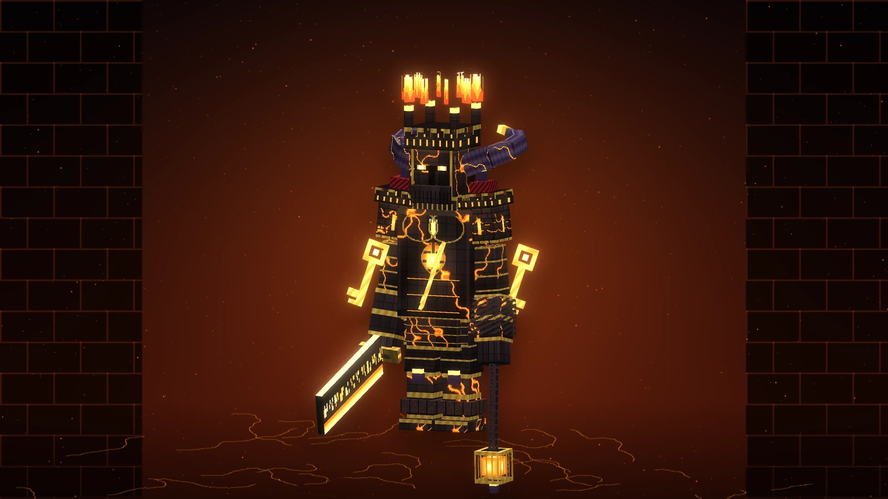
(agrandir l'image)
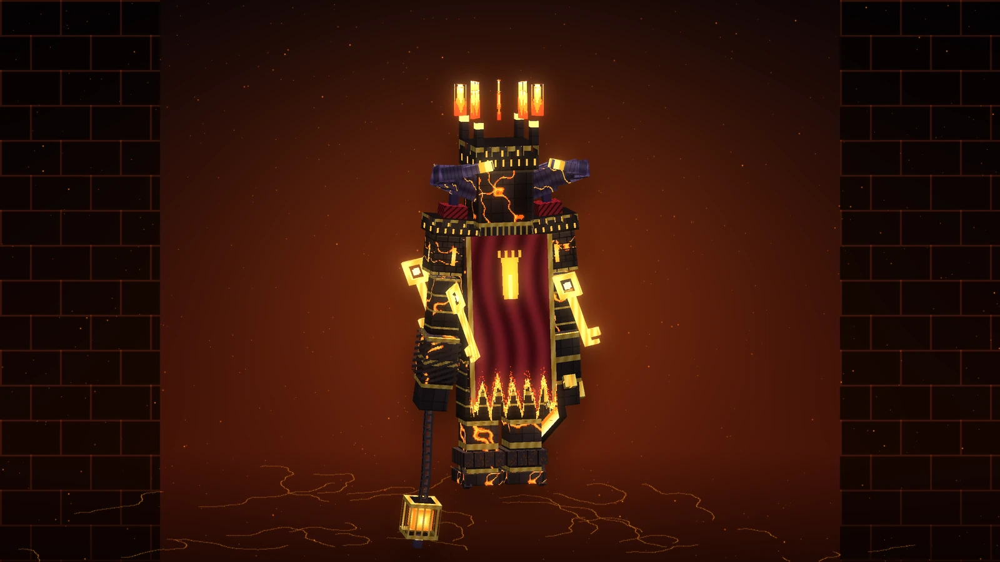
(agrandir l'image)
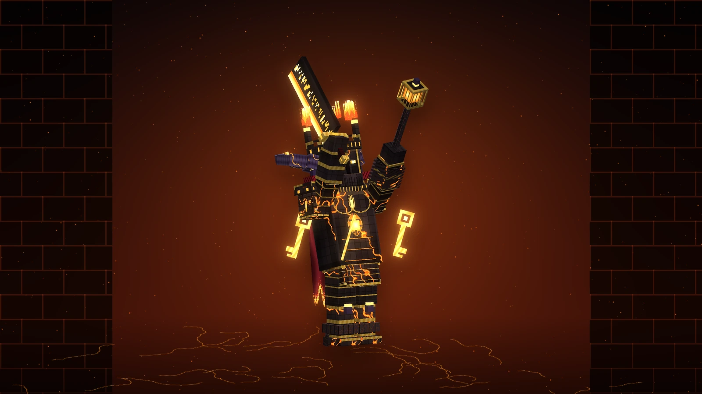
(agrandir l'image)
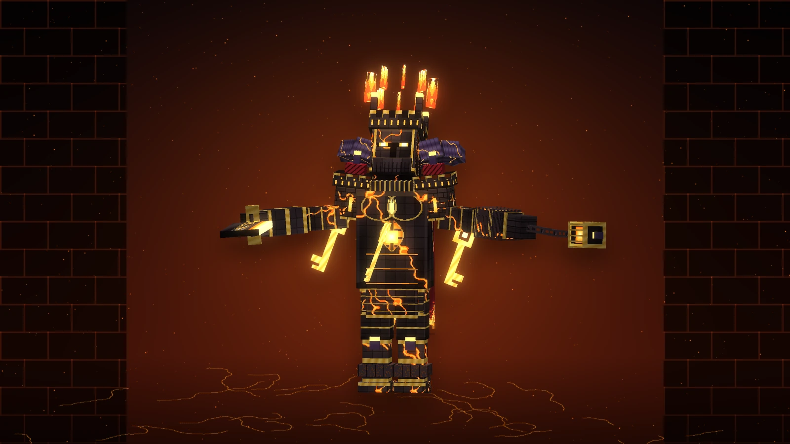
(agrandir l'image)
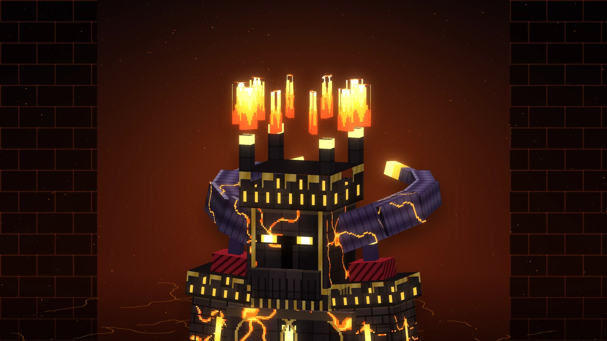
(agrandir l'image)Il est lent, il marche comme un engin de siège, et tout ce qu'il fait se voit venir : c'est la seule chose qui joue en votre faveur. Le combat se joue en trois actes, et sa barre de boss passe du rouge au violet puis au blanc : chauffé à blanc, il frappe plus fort et tout chez lui va plus vite.
| Attaque | Quand | Ce qui arrive |
|---|---|---|
| Le Couperet | de près, dès le premier acte | Il lève la lame à deux mains au-dessus de sa tête, puis l'abat : 22 dégâts devant lui (30 au dernier acte), et le sol se fend en une ligne de feu droit devant : 12 (16) à qui s'y trouve. |
| La chaîne | de loin, dès le premier acte | Il fait tournoyer la cage de feu et la lance : elle vous accroche (8, puis 12) et vous traîne jusqu'à ses pieds. Rester loin n'est pas une stratégie. |
| L'éruption | dès le premier acte | Un pied levé, abattu : un cercle s'allume au sol sous chacun, et d'autres autour de lui. Deux secondes pour en sortir, puis la pierre crache du feu : 12 (16), on brûle et l'on est projeté en l'air. |
| Le moulin | de près, à partir du deuxième acte | Il tourne sur lui-même deux fois, la lame tendue : rien n'est sûr à moins de quatre blocs et demi (12, puis 15 par tour). |
| La charge | de loin, à partir du deuxième acte | Tête baissée, cornes en avant, il traverse la salle : 18 dégâts (22) et un recul énorme. Un pas de côté suffit, si on le fait à temps. |
| La chute du ciel | au dernier acte | Il lève la lame vers le plafond et le ciel de la Tour s'effondre : des pierres ardentes tombent partout dans la salle, chacune annoncée par une lueur au sol, en vagues successives (12 chacune). |
| Le rugissement | aux deux tiers et au tiers de sa vie | Bras grands ouverts, l'anneau de feu double de taille : il est intouchable le temps du cri, une vague de chaleur repousse tout le monde (6 dégâts), et des revenants se lèvent à ses côtés : deux, puis trois. |
| Vie | Armure | Résistance | Taille |
|---|---|---|---|
| 600 | 18 (robustesse 10) | aucun recul, ni feu, ni chute, ni poison, ni Wither, ni Lévitation | 2,4 × 5,9 blocs |
Chacun de ses coups au corps à corps vous inflige Wither II. Les monstres ne peuvent pas le blesser, et ses attaques de zone, comme toutes celles de l'Astrelume, ne touchent jamais les autres monstres. Le battre termine la Tour et libère toute la cagnotte. Il existe aussi un œuf d'apparition du Tyran dans l'onglet créatif, pour qui veut le voir de près, ou s'entraîner.
Le butin ne vous appartient pas encore
Tout ce que vous gagnez s'accumule dans une cagnotte, et pas dans votre inventaire. Elle ne devient réelle qu'à un palier. C'est toute la tension du bâtiment : à chaque dixième étage, deux socles.
- Socle vert — vous repartez avec absolument tout. Les autres joueurs, eux, pourront toujours entrer dans cette tour ; le verrou est nominatif.
- Socle orange — dix étages de plus. La cagnotte reste en jeu.
Une tour, c'est une seule tentative. Elle est consommée pour vous — et pour tout votre groupe — dès que vous franchissez le seuil, pas au moment où vous en ressortez. Quelle que soit la fin de l'ascension, vous n'y reviendrez jamais.
Mourir coûte l'ascension, pas votre équipement. Vous vous réveillez chez vous avec tout ce que vous portiez : inventaire, armure, main gauche et expérience. Ce que vous perdez, c'est ce que la tour vous payait : la cagnotte (qui reste à ceux du groupe encore debout) et la tour elle-même, consommée pour vous dès le seuil.
Il n'y a donc aucune façon de ressortir avec le butin d'une tour autrement qu'en en ressortant par un palier. Et les monstres de la Tour ne lâchent rien quand on les tue : seulement leur expérience.
Le verrou est pris à l'entrée pour une raison précise : une tour qu'on pourrait retenter jusqu'à ce qu'elle se passe bien ne serait plus une ascension, mais une ferme. Mort, déconnexion prolongée ou redémarrage du serveur : dans les trois cas la tentative est consommée, et la cagnotte avec elle.
Ce que la Tour coupe
- Les téléportations. Pendant une ascension, le retour au lit du Vide, le Clou de l'Oubli et les Pierres de Passage sont refusés : une ascension ne se quitte que par un palier ou par une chute. On ne peut pas non plus se téléporter dans une arène depuis l'extérieur.
- Le Cœur du Néant. Il ne vous sauve pas dans la Tour : son sauvetage est un retour au lit, donc une fuite.
- Les dieux. Le slot divin se tait dès le seuil franchi : ni passif, ni acte divin, et vous retrouvez votre propre skin. Tout se rallume à la sortie.
Tout le reste fonctionne : les bonus de famille, les autres légendaires, et votre totem — le coup mortel refusé par Aethelgard compris.
En groupe
Il n'y a pas d'invitation : quiconque se trouve à moins de 16 blocs du seuil au moment où vous le touchez entre avec vous. Le groupe partage la cagnotte, et le groupe perd la tour ensemble. Quatre joueurs qui montent vingt étages puis repartent ont tous les quatre fini avec cette tour ; celui qui la trouvera plus tard la reprendra à l'étage 1, intacte.
Les monstres durcissent avec l'étage : environ +1,5 % de vie et +1,2 % de dégâts par étage, des Gardiens de Cendres à partir du dixième et de plus en plus nombreux ensuite. Une ascension en cours n'est pas sauvegardée : un redémarrage du serveur l'annule et rouvre la tour, exactement comme une mort.